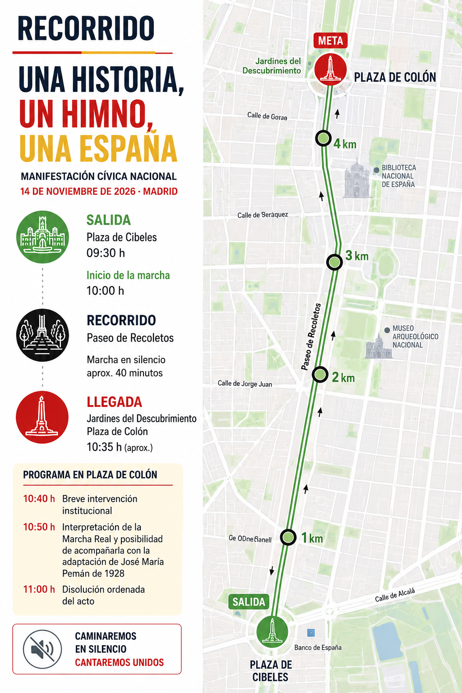

09:00
Concentración — Plaza de Cibeles
Faltan
para la concentración en Plaza de Cibeles · sábado 14 de noviembre de 2026 · 09:00
Objetivo
El objetivo de esta convocatoria es rendir un homenaje cívico y respetuoso a todas las generaciones que han construido España y promover, por los cauces democráticos y desde el respeto institucional, el debate sobre la posibilidad de que el Himno Nacional de España pueda volver a ser cantado oficialmente.
Impulsor de la iniciativa
Comunicador, autor y promotor de esta iniciativa ciudadana
Tras años investigando la historia del Himno de España y el recorrido jurídico de las distintas propuestas para dotarlo de una letra, impulsa este encuentro cívico con el objetivo de abrir un debate sereno y respetuoso sobre la posibilidad de que los españoles puedan volver a cantar oficialmente su himno.
Esta convocatoria no nace desde ningún partido político ni organización, sino desde el compromiso personal de un ciudadano que cree que los símbolos nacionales pertenecen a todos los españoles y que el diálogo es el mejor camino para construir consensos.
La manifestación constituye el primer paso de un proyecto cívico más amplio que pretende trasladar esta propuesta a las instituciones por las vías legalmente establecidas.
Porque los grandes cambios también pueden comenzar con la iniciativa de un solo ciudadano.
Transparencia
Esta iniciativa es de carácter ciudadano y no está promovida ni financiada por partidos políticos, administraciones públicas ni organizaciones con representación institucional. Toda la información relativa a la convocatoria, su organización y su evolución se publicará exclusivamente a través de esta página web y de los canales oficiales de Luis Rueda.
Sábado, 14 de noviembre de 2026 · Madrid
Recorrido

Programa
Cuarenta minutos
Ese silencio representa un homenaje colectivo a quienes nos precedieron y un compromiso con quienes construirán la España del futuro.
¿Quién puede participar?
Registro
Si deseas acompañarnos en este encuentro cívico y ayudarnos a organizar correctamente la convocatoria, confirma tu asistencia mediante el siguiente registro. Para facilitar la coordinación con la Delegación del Gobierno y los servicios de seguridad, agradecemos que confirmes previamente tu asistencia.
Al hacer clic serás redirigido a la plataforma oficial de inscripción (Eventbrite).